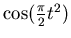

Next: About this document ...
Second Fundamental Theorem
The Fresnel Cosine Integral is defined by
This integral arises in certain optics applications.
- Sketch the general shape of . (You'll probably need to
sketch the integrand,
, first.)
- Is an even or odd function?
- Evaluate the following:
 |
(2) |
- Do this only if you have some extra time on your hands. As you
might remember from precalculus, the cosine function can be written as
an infinite series:
(We will derive this formula when we do chapter 9.)
Use the above equation to come up with a series expression for the
integrand. Then, integrate term-by-term to come up with a series
expression for . This series is (I suspect) how Maple
calculates to make pretty plots.
Next: About this document ...
Dave Feldman
2001-01-12